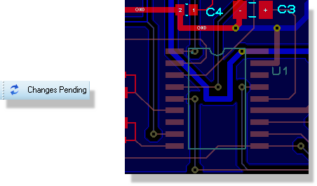
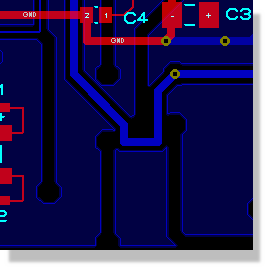
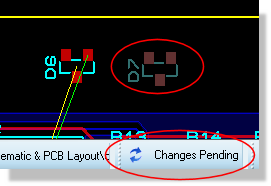

The term 'Engineering Change' refers to a situation in which an existing schematic is modified, and the resulting netlist re-loaded into the PCB module. This can occur both during the development of an original design, and also at a later date where a 'Mark II' version of the product is being produced. Proteus fully supports engineering changes, but what happens in a given situation depends largely on whether you are working with live netlisting enabled or with live netlisting disabled (batch mode).
Live netlisting can be turned on and off from the toggle command on the Tools menu in the layout module. We would advise that during development users should work with live netlisting switched on. The only time where live netlisting switched off may be of use is on larger layouts with multiple zones where there may be a performance penalty because all of the zone connectivity will be re-calculated on each schematic change. Note however that leaving Live Netlisting On and simply closing the layout tab or frame is just as optimal - netlist updates do not occur in the background.
Note that live netlisting must be turned on following an import from an older version to perform an initial sync.
See Also:
Importing an Version 7.xx DSN & LYT Project.
When you place a new component on the schematic it will automatically appear for placement in the parts bin in the layout module.
Wiring up the connections on the schematic will add the connections to the live netlist.
When you place a new component on the schematic, the PCB will enter a locked state indicated by a padlock on the connectivity status widget.
When you click on the padlock to unlock the PCB the updated netlist will be sent and the part will appear in the parts bin for placement.
Wiring up connections on the schematic will similarly lock the layout. You can click the padlock to unlock at any time and the current connectivity situation will be updated on the PCB.
More information on the above procedures with reference to the layout module can be found in the PCB Layout help documentation.
When you delete the component from the schematic the PCB will automatically enter a changes pending state and the corresponding parts and tracks on the layout will appear dimmed.

When you click on changes pending to accept the changes both the footprint and its tracking will be removed from the layout.

Alternatively, an undo operation will revert both the schematic and the layout to their previous status.
When you delete the component from the schematic the layout module will enter a locked condition.
When you click on the padlock to unlock the current connectivity is sent to the PCB layout. The deleted part and tracking will then appear dimmed and the connectivity status will indicate changes pending.

Clicking on changes pending will commit the deletion and the schematic and layout will be back in sync.
Removing a component or wire is an operation which affects objects that the board designer has already placed on the layout. As such, it requires you to manually confirm by clicking on the changes pending button to sync the layout.
If you find the dimmed state hard to see you can change the colour (e.g. bright yellow) from the View Menu, Layers Command in the Layout Module.
Adding connectivity is an action which does not affect the existing tracking on the layout. A ratsnest line will appear in the PCB Module as soon as you complete the wire on the schematic and the system will automatically synchronize.
The effect of removing connections on the schematic depends on whether they have been tracked on the layout.
Any changes to connectivity will render the layout module in a locked state. When the editing is complete, clicking on the padlock icon to unlock the PCB will update the layout with the new connectivity information.
If the only changes were the addition of new connections then ratsnest lines will appear on the layout.
If connections were removed which involve existing tracking then the PCB will enter the changes pending state and the corresponding track(s) will appear in a dimmed state. Confirming the deletion by clicking on changes pending will remove the track and the software will return to a synchronized state.
Re-annotating components is fully automatic. The layout will update and the system will remain in sync.
Gate-swapping multi-element parts from the schematic is also fully automatic. The layout will update and remain in sync.
Use the Annotator from the Tools Menu on the schematic to automate the task on the Schematic or the Automatic Annotator from the Tools menu on the layout to automate the task according to your needs. Context sensitive help on both dialogues is available via the question mark at the top right of the dialogue form.
Re-annotating components will lock the layout. Unlocking the layout will auto-sync with the schematic.
Gate-swapping multi-element parts from the schematic will also lock the layout. Unlocking the layout will auto-sync with the schematic.
In either case above, the assumption is that you have only re-annotated or gate-swapped. Clearly, if you re-annotate, delete, add and re-wire then you will enter a changes pending state when you unlock the layout. The re-annotation changes however will be applied - confirming changes pending serves to confirm any removal operations from the layout.